Scalar Decisions and Motion
The locator libraries turn images into numbers: where the ball is, where the paddle is, how big an object is. Those numbers still have to become a decision — move up or down, which object to follow, where the ball will be in five frames. With only + − × ÷, tanh and relu, evolution has to rebuild abs, min or "is a bigger than b" from scratch every time.
These two bundles give it those building blocks directly. Every operator takes numbers and returns a Float64, with at most three inputs.
| Getter | Bundles |
|---|---|
get_extension_decision_nb() | bundle_number_decision, bundle_number_motion |
A worked example: playing Pong
Two consecutive frames. The ball moves up and to the right; the right paddle must decide whether to go up or down. Every step below is a single MAGE operator, so an evolved program can express the whole chain.
ball_x0, ball_y0 = g_call(O.obj_x_smallest, previous_frame), g_call(O.obj_y_smallest, previous_frame)
ball_x, ball_y = g_call(O.obj_x_smallest, frame), g_call(O.obj_y_smallest, frame)
paddle_x, paddle_y = g_call(O.obj_x_rightmost, frame), g_call(O.obj_y_rightmost, frame)
vx = ball_x - ball_x0 # speed, per frame
vy = ball_y - ball_y0
frames_left = (paddle_x - ball_x) / vx # frames until the ball reaches the paddle
target_y = g_call(D.number_bounce, ball_y, vy, frames_left) # where it will cross, after bouncing
action = g_call(D.number_toward, target_y, paddle_y, 0.03) # -1 up, 0 stay, +1 down
(ball_y = round(ball_y, digits = 3), vy = round(vy, digits = 3),
frames_left = round(frames_left, digits = 1), target_y = round(target_y, digits = 3),
paddle_y = round(paddle_y, digits = 3), action = action)(ball_y = 0.399, vy = -0.101, frames_left = 6.9, target_y = 0.297, paddle_y = 0.684, action = -1.0)| Previous frame | Current frame and plan |
|---|---|
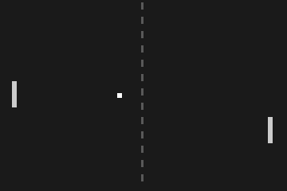 | 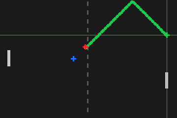 |
Blue is the ball in the previous frame, red the ball now, the green dots the path number_bounce predicts (it reflects off the top wall), and the green crosshair the point where the ball will reach the paddle's column. The paddle is below that point, so number_toward returns -1: move up.
Shaping one number
Each plot shows the output (vertical) against the first input (horizontal), both from -1.5 to 1.5; grid lines every 0.5, darker axes at 0.
| Operator | Call plotted | Plot | What it is for |
|---|---|---|---|
number_abs | number_abs(a) | 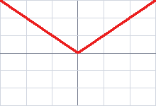 | distance regardless of direction |
number_sign | number_sign(a) | 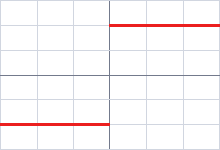 | direction only: -1, 0, 1 |
number_clamp01 | number_clamp01(a) | 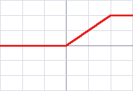 | keep a coordinate inside the image |
number_clamp | number_clamp(a, -0.5, 1.0) | 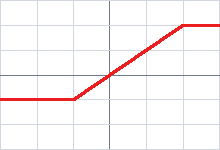 | limit to any range (bounds in any order) |
number_step | red number_step(a), blue number_step(a, 0.5) | 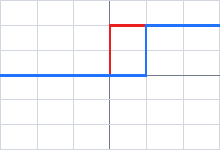 | yes/no: is a at least t? |
number_deadzone | number_deadzone(a, 0.5) | 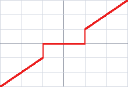 | ignore small errors so a controller does not jitter |
number_band | number_band(a, -0.5, 0.5) | 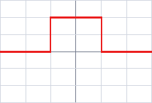 | yes/no: is a inside a range? |
number_smoothstep | number_smoothstep(a, -1, 1) | 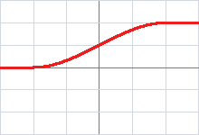 | a soft version of step |
Comparing and choosing
Two-input operators, plotted with the second input fixed:
| Operator | Call plotted | Plot | What it is for |
|---|---|---|---|
number_min, number_max | red number_min(a, 0.5), blue number_max(a, 0.5) | 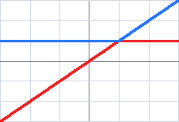 | the nearer / farther of two objects, a floor or ceiling |
number_mean | number_mean(a, 1.0) | 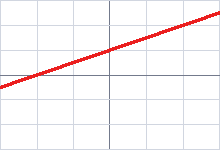 | midpoint between two objects |
number_gt, number_lt | red number_gt(a, 0.5), blue number_lt(a, 0.5) | 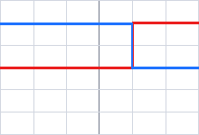 | comparisons as 1.0 / 0.0, ready to multiply |
number_closer | number_closer(a, 1.0, 0.0) | 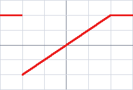 | of two candidates, the one nearest a reference |
number_toward | red number_toward(0, a), blue with deadzone 0.5 | 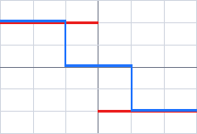 | which way to move a to reach the target |
number_lerp | number_lerp(-1, 1, t) | 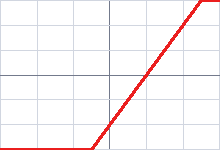 | blend two values, e.g. aim between two objects |
Three-input choosers are easier to read as examples:
(
median3 = g_call(D.number_median3, 0.9, 0.1, 0.5), # middle of three estimates
argmax3_first = g_call(D.number_argmax3, 0.9, 0.1, 0.5), # 0.0: the first is largest
argmax3_second = g_call(D.number_argmax3, 0.1, 0.9, 0.5), # 0.5: the second
argmax3_third = g_call(D.number_argmax3, 0.1, 0.2, 0.5), # 1.0: the third
closer = g_call(D.number_closer, 0.1, 0.8, 0.6), # 0.8 is closer to 0.6
)(median3 = 0.5, argmax3_first = 0.0, argmax3_second = 0.5, argmax3_third = 1.0, closer = 0.8)Motion and geometry
bundle_number_motion works on normalised coordinates and their differences.
| Operator | Call plotted | Plot | What it is for |
|---|---|---|---|
number_wrap01 | number_wrap01(a) (vertical axis -0.5 to 1.5) | 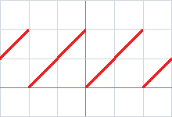 | playfields where leaving one side re-enters the other |
number_reflect01 | number_reflect01(a), a from -1 to 3 | 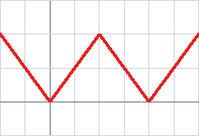 | fold a position back between two walls |
number_bounce, number_extrapolate | red number_bounce(0.2, 0.7, t), blue number_extrapolate(0.2, 0.7, t), t from 0 to 3 | 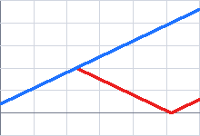 | where a moving object will be after t frames, with and without walls |
number_sin, number_cos | red number_sin(t), blue number_cos(t), t in turns | 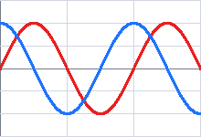 | periodic patterns, components of a direction |
number_dist and number_angle turn an offset into a distance and a direction (a fraction of a turn: 0 right, 0.25 down, 0.5 left, 0.75 up):
dx = g_call(O.obj_dx_smallest_largest, g_binary(Float64.(reinterpret(frame.img)) .> 0.5))
dy = g_call(O.obj_dy_smallest_largest, g_binary(Float64.(reinterpret(frame.img)) .> 0.5))
(
dist_3_4 = g_call(D.number_dist, 0.3, 0.4),
angle_right = g_call(D.number_angle, 1.0, 0.0),
angle_down = g_call(D.number_angle, 0.0, 1.0),
angle_up_left = g_call(D.number_angle, -1.0, -1.0),
ball_to_paddle_distance = round(g_call(D.number_dist, dx, dy), digits = 3),
)(dist_3_4 = 0.5, angle_right = 0.0, angle_down = 0.25, angle_up_left = 0.625, ball_to_paddle_distance = 0.447)Bundles
MAGE.number_decision — Module
Scalar decision and motion helpers: turn positions and offsets into choices.
Bundles
The exhaustive, always-current list of operators in each bundle is on the Bundle Catalogue page.
These are plain functions on numbers (no factory): every input is converted to Float64 and extra trailing inputs are ignored.
Example: a Pong paddle controller
D = MAGE.number_decision
ball_y, paddle_y = 0.30, 0.55
D.number_toward(ball_y, paddle_y) # -1.0: move the paddle up
D.number_toward(0.54, paddle_y, 0.02) # 0.0: within the dead zone, stay
D.number_bounce(0.9, 0.3, 1.0) # 0.8: 0.9 + 0.3 = 1.2 bounces back off 1MAGE.number_decision.bundle_number_decision — Constant
bundle_number_decisionShape, compare and choose between numbers. Every operator returns a Float64.
- Shaping:
number_abs,number_sign,number_clamp01,number_clamp,number_step,number_deadzone,number_band,number_smoothstep. - Comparing and choosing:
number_min,number_max,number_mean,number_median3,number_gt,number_lt,number_closer,number_argmax3. - Acting:
number_toward(-1,0or1to movecurrenttowardstarget) andnumber_lerp.
MAGE.number_decision.bundle_number_motion — Constant
bundle_number_motionGeometry and kinematics on normalised coordinates: number_dist, number_angle, number_sin, number_cos, number_wrap01, number_reflect01, number_extrapolate and number_bounce, which predicts where a point moving at constant speed ends up after bouncing between the borders 0 and 1 (a Pong ball).
Timings for the examples
Measured during this documentation build. See Timing methodology for measurement limits and input cases that can make operators expensive.
Julia 1.13.2; znver4; 1 Julia thread(s); optimisation level 2.
Times are warmed wall-clock measurements of the actual calls above, including invokelatest and allocations. Loading, factory generation and image rendering are excluded. CPU load and garbage collection affect these values. The maximum is the slowest observed sample, not a worst-case bound.
| Input | Dimensions | Pixel storage |
|---|---|---|
| image #1 | 80×120 | IntensityPixel{FixedPointNumbers.N0f8} |
| image #2 | 80×120 | IntensityPixel{FixedPointNumbers.N0f8} |
| image #3 | 80×120 | BinaryPixel{Bool} |
| image #4 | 80×120 | BinaryPixel{Bool} |
Numeric-only plot calls of the same operator and arity are grouped: argument ranges cover the sampled values, the median is the median of the per-case medians, and the maximum covers every observed sample. Image calls keep a row for each input/parameter combination.
| Operator | Inputs | Output | Median (µs) | Observed max (µs) | Allocated bytes (median) | Cases / samples |
|---|---|---|---|---|---|---|
obj_x_smallest | image #1 | Float64 | 14.75 | 44.01 | 1408 | 1 / 3 |
obj_y_smallest | image #1 | Float64 | 14.69 | 37.38 | 1408 | 1 / 3 |
obj_x_smallest | image #2 | Float64 | 14.18 | 15.11 | 1408 | 1 / 3 |
obj_y_smallest | image #2 | Float64 | 14.68 | 25.69 | 1408 | 1 / 3 |
obj_x_rightmost | image #2 | Float64 | 14.25 | 41.48 | 1408 | 1 / 3 |
obj_y_rightmost | image #2 | Float64 | 14.23 | 35.76 | 1408 | 1 / 3 |
number_bounce | arg1: [0.2, 0.3987341772151899]; arg2: [-0.10126582278481011, 0.7]; arg3: [0.0, 6.875000000000001] | Float64 | 0.22 | 10.63 | 96 | 221 / 663 |
number_toward | arg1: [0.0, 0.29746835443037956]; arg2: [-1.5, 1.5]; arg3: [0.03, 0.5] | Float64 | 0.49 | 12.53 | 96 | 221 / 663 |
number_reflect01 | arg1: [-1.0, 3.0] | Float64 | 0.22 | 11.07 | 64 | 289 / 867 |
number_abs | arg1: [-1.5, 1.5] | Float64 | 0.14 | 19.9 | 64 | 220 / 660 |
number_sign | arg1: [-1.5, 1.5] | Float64 | 0.14 | 9.86 | 64 | 220 / 660 |
number_clamp01 | arg1: [-1.5, 1.5] | Float64 | 0.61 | 23.91 | 64 | 220 / 660 |
number_clamp | arg1: [-1.5, 1.5]; arg2: -0.5; arg3: 1.0 | Float64 | 0.29 | 24.9 | 96 | 220 / 660 |
number_step | arg1: [-1.5, 1.5] | Float64 | 0.37 | 19.05 | 64 | 220 / 660 |
number_step | arg1: [-1.5, 1.5]; arg2: 0.5 | Float64 | 0.2 | 5.62 | 80 | 220 / 660 |
number_deadzone | arg1: [-1.5, 1.5]; arg2: 0.5 | Float64 | 0.37 | 23.4 | 80 | 220 / 660 |
number_band | arg1: [-1.5, 1.5]; arg2: -0.5; arg3: 0.5 | Float64 | 0.16 | 19.2 | 96 | 220 / 660 |
number_smoothstep | arg1: [-1.5, 1.5]; arg2: -1.0; arg3: 1.0 | Float64 | 0.22 | 23.06 | 96 | 220 / 660 |
number_min | arg1: [-1.5, 1.5]; arg2: 0.5 | Float64 | 0.25 | 15.32 | 80 | 220 / 660 |
number_max | arg1: [-1.5, 1.5]; arg2: 0.5 | Float64 | 0.17 | 19.05 | 80 | 220 / 660 |
number_mean | arg1: [-1.5, 1.5]; arg2: 1.0 | Float64 | 0.14 | 10.56 | 80 | 220 / 660 |
number_gt | arg1: [-1.5, 1.5]; arg2: 0.5 | Float64 | 0.71 | 22.72 | 80 | 220 / 660 |
number_lt | arg1: [-1.5, 1.5]; arg2: 0.5 | Float64 | 0.16 | 28.55 | 80 | 220 / 660 |
number_closer | arg1: [-1.5, 1.5]; arg2: [0.8, 1.0]; arg3: [0.0, 0.6] | Float64 | 0.45 | 19.9 | 96 | 221 / 663 |
number_toward | arg1: 0.0; arg2: [-1.5, 1.5] | Float64 | 0.27 | 11.22 | 80 | 220 / 660 |
number_lerp | arg1: -1.0; arg2: 1.0; arg3: [-1.5, 1.5] | Float64 | 0.19 | 16.5 | 96 | 220 / 660 |
number_wrap01 | arg1: [-1.5, 1.5] | Float64 | 0.18 | 11.68 | 64 | 220 / 660 |
number_extrapolate | arg1: 0.2; arg2: 0.7; arg3: [0.0, 3.0] | Float64 | 0.19 | 28.26 | 96 | 220 / 660 |
number_sin | arg1: [0.0, 1.5] | Float64 | 0.24 | 15.85 | 64 | 220 / 660 |
number_cos | arg1: [0.0, 1.5] | Float64 | 0.14 | 18.31 | 64 | 220 / 660 |
number_median3 | 0.9; 0.1; 0.5 | Float64 | 0.68 | 14.14 | 96 | 1 / 3 |
number_argmax3 | arg1: [0.1, 0.9]; arg2: [0.1, 0.9]; arg3: 0.5 | Float64 | 0.29 | 40.95 | 96 | 3 / 9 |
obj_dx_smallest_largest | image #3 | Float64 | 7.32 | 29.03 | 864 | 1 / 3 |
obj_dy_smallest_largest | image #4 | Float64 | 7.52 | 37.63 | 864 | 1 / 3 |
number_dist | arg1: [0.3, 0.4369747899159664]; arg2: [-0.0949367088607595, 0.4] | Float64 | 0.48 | 21.51 | 80 | 2 / 6 |
number_angle | arg1: [-1.0, 1.0]; arg2: [-1.0, 1.0] | Float64 | 0.45 | 22.82 | 80 | 3 / 9 |